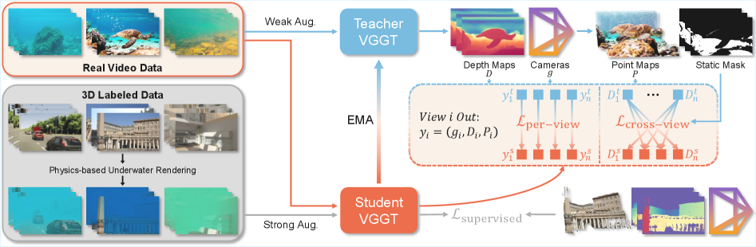
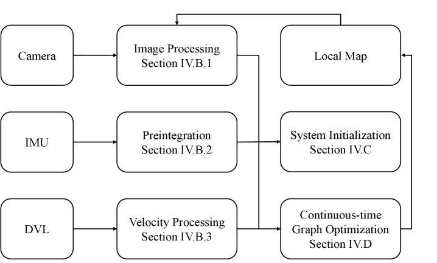
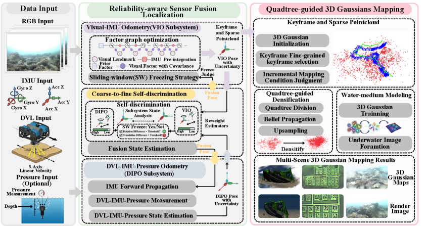
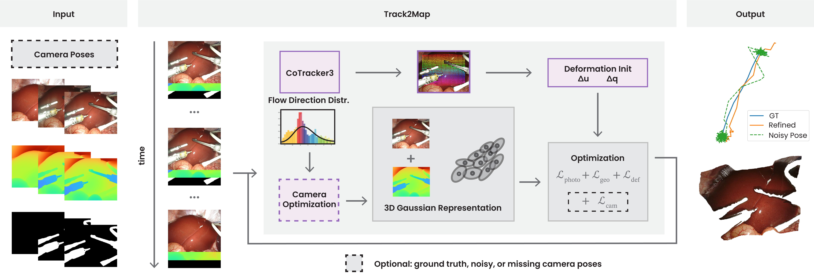
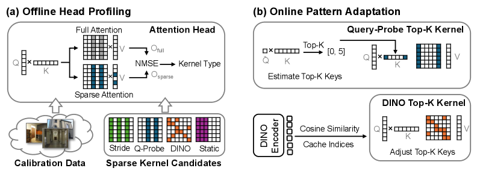

Executive Summary
水下 3D 视觉在本期明显分成两条路线。Wat3R 走 feed-forward 3D domain adaptation，用合成水下渲染、未标注真实视频和 cross-view consistency 适配 VGGT；DIVO/APVI-SLAM 则走工程传感器融合，把 DVL、压力计、IMU 与视觉估计接入连续时间或可靠性重加权框架。两类路线都在解决同一个痛点：水体散射、低纹理和动态颗粒会让纯视觉几何退化。
Gaussian map 正从“渲染结果”变成“跟踪约束”。Real-Time LiDAR GS SLAM、APVI-SLAM、Track2Map、MyGO-Splat、DL-SLAM 等都在让 3DGS 表示参与 pose tracking 或动态概率估计，而不是只做离线建图。值得注意的是，论文证据支持的是特定数据集上的精度/速度改善，尚不能推出通用场景稳定性。
FeedForward 3D 的瓶颈开始转向长序列效率与相机模型适配。SAF3R 表明 F3R transformer 的 global attention 具有头级稀疏异质性，可训练无关地加速；ReCal3R、RayTun3R、AdaptiveSplat 等摘要级条目则分别指向 streaming state 稳定性、鱼眼相机偏置和 Gaussian 数量控制。
Deep-read Papers
| 论文 | 系统/框架图 | 解决的问题 | 方法 / 结构 | Insight 与数学知识 | 实验与效果 | 复现与启发 | 阅读证据 |
|---|---|---|---|---|---|---|---|
| Wat3R: Underwater 3D Geometry Learning without Annotations FeedForward 3DUnderwaterVGGT |
 Fig.3 Wat3R teacher-student framework |
水下场景缺少大规模 3D 标注，光衰减、散射和悬浮物会破坏基于陆地数据训练的 feed-forward geometry model；传统 COLMAP/WaterSplatting 在稀疏水下输入中失败率高。 | 以 VGGT 为 backbone，采用 Mean Teacher 半监督框架：合成水下有标注数据提供监督，真实未标注视频提供弱/强增强视图；teacher 生成 depth/camera/point map pseudo-label，student 通过 per-view 与 cross-view consistency 学习。 | 核心数学是跨视几何一致性：在没有真实 3D label 的水下视频中，把不同视角的深度、相机和 point map 约束到同一几何解释上；static mask 用来抑制动态物体和强散射导致的不可靠区域。 | Water3D point-map：Wat3R Depth+Cam overall mean/median 0.406/0.153，VGGT 为 0.624/0.192；SeaThru-NeRF pose AUC@5/15/30 为 0.540/0.820/0.906，VGGT 为 0.392/0.707/0.843。FLSea Stereo 10-view 比较中 Wat3R 0/152 失败，WaterSplatting 99/152 失败，COLMAP 变体 91/152 或 99/152 失败。 | 代码仓库已释放，包含环境文件、demo、depth/pose/point evaluation；需要下载 checkpoint、数据和可能的 Hugging Face/外部资源。工程启发是：对水下/雾天/低能见度应用，不应只做图像增强后喂给 3D foundation model，而要把 domain physics 和跨视一致性放进训练目标。 | 全文 HTML 深读：Intro、Method、Water3D 构建、实验表格、robustness/failure、appendix；GitHub README/tree 检查；系统图已本地视觉确认。 |
| DIVO: Continuous-time DVL-Inertial-Visual Odometry for Unmanned Underwater Vehicles VIODVLUnderwater |
 Fig.3 DIVO overall system flowchart |
UUV 在低能见度、动态颗粒、重复结构和照明变化中容易视觉跟踪失败；DVL/IMU/视觉频率异步，传统离散时间或纯视觉 VIO 难以稳定覆盖长航迹。 | 连续时间 graph optimization 作为主干，融合 camera、IMU、DVL；前端用 SuperPoint + LightGlue 替代 KLT，并与 acoustic-visual-inertial 设置比较。真实 Quarry 数据用 ROV、stereo camera、IMU、Waterlinked A50 DVL 和 photogrammetry ground truth。 | 连续时间轨迹表达适合接入异步传感器；DVL 给速度/尺度约束，learned feature matching 在水下低纹理和颗粒干扰下比传统 KLT 更能保持可重复关联。论文还把“ground truth coverage”作为鲁棒性指标，而不只看重叠段 ATE。 | Quarry 表 IV：Conveyor1/2 上 DIVO 分别为 100% coverage、0.258m/0.964° 与 100%、0.271m/1.050°，优于 MSCKF-DVIO 与 AQUA-SLAM。作者报告 Conveyor1 位置/旋转 ATE 相对 AQUA-SLAM 下降 25%/45%，Conveyor2 下降 49%/59%；DIVO 在 visually challenging 序列中相对其 VIO 版本也降低 ATE。 | 论文称算法配置将开源，数据将作为独立 dataset paper 释放；本期未找到配套代码仓库。对工程复现的启发是：水下 VIO 不应只把 DVL 当后验修正，而应把异步传感器和视觉关联放在统一连续时间框架里评估 coverage。 | 全文 HTML 深读：系统架构、feature tracking、state-of-the-art benchmarking、Quarry 数据、表 IV、RTE、conclusion；系统图已下载并视觉确认。 |
| APVI-SLAM: Real-Time Acoustic-Pressure-Visual-Inertial Localization and Photorealistic Mapping System in Complex Underwater Environment SLAM3DGSDVL/Pressure |
 Fig.2 APVI-SLAM framework overview |
水下 VIO 在视觉退化时会把不可靠视觉估计传给整个融合系统；同时，已有水下 dense mapping 多为点云或离线 3DGS，难以实时获得 photorealistic map。 | 并行构建 VIO 与 DVL-IMU-Pressure Odometry（DIPO）子系统，通过 coarse-to-fine self-discrimination 动态判断 VIO/DIPO 稳定性并重加权；sliding-window freezing 在视觉退化时保留可信状态；mapping 端使用 water-medium model 与 quadtree-guided densification 优化 3D Gaussians。 | 关键不是简单“更多传感器”，而是拒绝让退化视觉污染状态估计：用 feature 数量、稳定点比例、VIO/DIPO 偏差、Hessian 特征值分布来判别可靠性。mapping 端把水体衰减、backscatter 和 depth hypothesis/belief propagation 结合起来控制 Gaussian densification。 | Tank dataset ATE avg：APVI-SLAM 0.22m，AQUA-SLAM 0.30m，UVA 0.43m。仿真 hard sequence：PSNR 32.390、SSIM 0.843、tracking 100 FPS、rendering 1035 FPS、GPU 6GB。传感器消融：M+I+D+P avg 0.22，I+D+P avg 0.31；freezing 消融成功率从 21% 提升到 100%。 | 论文称完整系统用 C++/CUDA 实现，但本期未发现公开代码链接；其模块划分对水下机器人有直接工程参考：把“视觉失败时是否冻结/丢弃状态”显式做成策略，而不是只调噪声协方差。 | 全文 HTML 深读：Intro、Reliability-aware fusion、quadtree 3DGS mapping、Tank/sim/coral experiments、ablation、conclusion；系统图已下载并视觉确认。 |
| Real-Time LiDAR Gaussian Splatting SLAM via Geometry-Aware Covariance Coupling LiDAR SLAMGaussian SplattingReal-time |
 Fig.2 LiDAR GS SLAM covariance-coupled system Fig.2 LiDAR GS SLAM covariance-coupled system |
LiDAR 3DGS SLAM 要同时满足大场景实时 tracking、dense Gaussian mapping 和可控 map size；如果 tracking 与 mapping 各自独立，map 不能反向改善 registration，Gaussian 数量也容易膨胀。 | tracking 用 G-ICP 注册下采样 LiDAR scan，mapping 用 spherical rasterization 维护 2D Gaussian map；从 tracking 得到的局部 covariance 初始化 Gaussian orientation/scale，并产生 geometry score 用于平面 prune 与复杂区域 split/densify；优化后的 Gaussian 参数反馈给 scan-to-map registration。 | 核心 insight 是 covariance reuse：同一局部几何估计既用于 registration 约束，又用于 Gaussian 初始化和 map budget control。控制分数把容量分配给几何复杂区域，减少平面冗余。 | Newer College/Oxford Spires/KITTI 上评估 ATE、mesh quality、FPS。Newer Quad 使用 estimated poses 时 F-score 86.78、22.15 FPS；作者报告四个序列平均 F-score 69.51、21.24 FPS，PIN-SLAM 为 50.61、8.87 FPS，Splat-LOAM 为 46.46、3.44 FPS；平均 map 7.23MB，比 PIN-SLAM 18.83MB 小 61.6%。 | GitHub 仓库已公开，Linux/CUDA/PCL/Eigen 依赖重，含 KITTI/Newer College/Oxford Spires 配置和 Splat-LOAM 子目录；未本地编译。启发是用 LiDAR geometry 约束 Gaussian map，比把 GS 当纯视觉渲染层更适合机器人在线场景。 | 全文 HTML 深读：method、covariance coupling、map management、实验、ablation、limitations；repo README/tree/commit 检查；系统图视觉确认。 |
| Track2Map: Online Deformable SLAM with Motion-Aware Pose Optimization in Robotic Surgery Deformable SLAMSurgical 3DGSStereo |
 Fig.1 Track2Map pipeline |
手术场景 3DGS/NRSfM 同时面对 camera pose、组织形变和工具遮挡；如果相机静止而组织/工具在动，直接优化 pose 会把组织运动误解释为相机漂移。 | 使用 CoTracker3 提供 dense 2D tracks，基于 flow direction dispersion 判断是否存在 camera-dominant motion；把 track 通过 stereo depth lift 到 3D anchors，初始化 sparse deformation field；在 motion gate 允许时联合优化 pose、photometric/depth loss、deformation regularization 和 2D reprojection consistency。 | 关键是 motion-aware gating：低方向离散度更像相机整体运动，高离散度更像局部组织/工具形变。这个统计量不是复杂模型，但把临床场景中“内窥镜经常静止”的 procedure prior 编进了优化。 | StereoMIS no-pose：Track2Map Stereo PSNR/SSIM/LPIPS 为 27.58/0.745/0.274，EndoFlow-SLAM 为 21.96/0.59/0.27；pose ATE 0.0285m，EndoGSLAM-H 0.1077m、Endo3R 0.0897m。heavy-noise 消融：full 27.56 PSNR，w/o deformation 20.64，w/o gating 24.41。 | repo 有 clean_pose/noisy/no_pose 三种运行模式、StereoMIS 配置、pose perturb 脚本和 Gaussian rasterization 子模块；但 README 需要外部 CoTracker/FoundationStereo、Google Drive 权重和 StereoMIS 数据。本期未下载权重或运行。论文限制明确：当前实现约 6 秒/帧，不是真正实时。 | 全文 HTML 深读：Introduction、Method、results/ablation、limitations、conclusion；repo README/tree/commit 检查；系统图视觉确认。 |
| SAF3R: Dynamic Sparse Attention for Feed-Forward 3D Reconstruction Transformers FeedForward 3DSparse AttentionEfficiency |
 Fig.5 SAF3R sparse attention framework |
VGGT/π3/DA3/MapAnything 等 F3R transformer 在长图像序列上受 global attention 二次复杂度限制；已有压缩/稀疏方法没有充分利用 attention head 的差异和输入动态性。 | 训练无关框架：离线 profiling 每个 global attention head 的稀疏模式，把 head 分配到 stride、query-probe top-k、DINO top-k、static 等 kernel；在线用轻量策略适配输入依赖的注意力行为。 | 论文的主要 insight 是 F3R global attention 呈现三种高度稀疏/异质模式，不同层/头承担 reference-frame、correspondence、positional 等不同功能。DINO feature similarity 可以近似 correspondence heads 的 key selection，从而避免全量 attention。 | 作者报告处理长序列时 end-to-end speedup 最高达 VGGT 5.8x、π3 6.8x、DA3 3.9x，同时保持 camera pose estimation 和 reconstruction quality。Ablation 显示 head-wise 动态配置在高 sparsity 下仍保持或略改进 AUC@30/AUC@3。 | repo 提供 pip install、inference_demo、Triton kernel、profiling/evaluation configs，支持 VGGT/π3/DA3/StreamVGGT；首次运行会 JIT 编译并自动下载 checkpoint。工程启发是：若要把 F3R 用到长视频/SfM pipeline，先做注意力 profiling 可能比直接裁 token 更稳。 | 全文 HTML 深读：attention analysis、method、benchmark、ablation、limitations、appendix；repo README/tree 检查；系统图视觉确认。 |
{kind=link}
{kind=link}
{kind=link}
{kind=link}
{kind=link}
Repo Deep Dives
| Repo | 目标与能力 | 代码结构证据 | 依赖 / 硬件 | 成熟度判断 | 领域关系 |
|---|---|---|---|---|---|
| LSXI7/Wat3R 42 stars / 7 forks；Apache-2.0；created 2026-03-13，updated 2026-07-12 |
ECCV 2026 代码与 checkpoint 入口，用于水下 feed-forward 3D geometry learning。README 提供 Hugging Face Space、Quick Start、basic usage、evaluation。 | 检查到 demo_viser.py、environment.yaml、requirements.txt、wat3r/models/wat3r.py、evaluation/evaluate_depth.py、evaluate_point.py、evaluate_pose.py、evaluation/run_all.sh 和示例图像目录。 |
Conda 环境 + editable install；demo 另有 requirements_demo.txt。需 checkpoint、数据集/示例数据；未本地下载或运行。 |
代码近期 commit 包含 initial release、README 更新与 cleanup（2026-07-10/11）。仓库结构完整，至少支持 demo 与三类 evaluation；成熟度高于只放项目页的 repo，但运行依赖仍未验证。 | 直接对应 Wat3R 深读论文，是本期 FeedForward 3D + underwater domain adaptation 的主要可复现实入口。 |
| styufo/Track2Map 3 stars / 0 forks；created 2026-02-26，updated 2026-07-11 |
Track2Map 官方仓库，README 明确支持 clean_pose、noisy、no_pose 三种模式，用于 StereoMIS surgical video 的在线 deformable 3DGS reconstruction。 |
检查到 scripts/run_track2map.py、scripts/eval_track2map_metrics.py、scripts/perturb_stereomis_groundtruth.py、configs/StereoMIS/*.yaml、src/scene/deformation.py、src/scene/gaussian_model.py、Gaussian rasterization CUDA 子模块。 |
Conda 环境，需安装 gaussian-rasterization、simple-knn，还需 clone CoTracker 与 FoundationStereo，并从 Google Drive 下载权重；依赖 StereoMIS Tracking 数据。 |
研究原型可运行路径清晰，但 stars 少、近期 commits 主要是项目页/README；论文也声明非实时（约 6 秒/帧）。本期未验证外部依赖和数据准备。 | 对应 surgical SLAM/3DGS 方向，是把 pose prior 缺失/噪声纳入可运行 pipeline 的示例。 |
| Lab-of-AI-and-Robotics/LiDAR-GS-SLAM 5 stars / 0 forks；MIT；created 2026-06-19，updated 2026-07-10 |
Real-Time LiDAR Gaussian Splatting SLAM 官方实现。README 给出系统 overview、Linux/CUDA 安装、数据集配置和运行入口。 | 检查到 requirements.txt、install_submodules.sh、KITTI/Newer College/Oxford Spires 配置；仓库包含 Splat-LOAM/、slam/mapper.py、gaussian_renderer/、spherical rasterizer CUDA 子模块、docker/build scripts。 |
Linux + CUDA NVIDIA GPU；需要 PyTorch、CMake、Ninja、Eigen、PCL、本地 CUDA rasterizer、simple-knn、modified FastGICP、MapClosures pybind。Windows 原生不适合直接跑。 | README 比较完整，但近期 commits 多为 README 更新，stars 少；实际 C++/CUDA/Python 扩展构建复杂，成熟度按“研究代码，需 Linux/CUDA 复现投入”判断。 | 本期 LiDAR + GS-SLAM 的关键 repo，结构上能检查到 tracking/mapping/config 证据。 |
| limshoonkit/DL-VINS-Factory-ROS2 10 stars / 2 forks；GPL-3.0；created 2026-06-29，updated 2026-07-09 |
ROS 2 VINS-Fusion style learned front-end factory，集成 ALIKED、RaCo、SuperPoint、XFeat、LightGlue 与 AnyLoc loop closure，目标是 Jetson/TensorRT 实时 VIO。 | README 读到 scripts/download_weights.sh、LightGlue-ONNX-Jetson/README.md、AnyLoc/vpr/dino_vpr_export.py、DL-VINS/src/dl_vins/weights、scripts/eval_run.sh 和 scripts/eval_runner.py。递归 tree API 返回 500，未能完整列目录。 |
CUDA 12.6 / JetPack 6.x、TensorRT 10.3、Ceres 2.2、OpenCV 4.13、ROS2 colcon build；需要导出 TensorRT engines，准备 EuRoC/NTU-VIRAL/SubT-MRS 等数据。 | README 很工程化，直接给 Jetson 部署路径、demo 视频和评估脚本；但 tree API 未完整拉取，本期无法交叉验证所有文件。 | 与 DL-VINS-Factory 论文/摘要相互印证，是学习前端进入紧耦合 VIO 工程的可跟踪入口。 |
Quantitative Experiment Highlights
| 来源 | 数据集 / 场景 | 指标 | 结果 | 解释边界 |
|---|---|---|---|---|
| Wat3R | Water3D、SeaThru-NeRF、FLSea Stereo | point-map accuracy/completeness/overall；pose AUC；failure rate | Water3D Depth+Cam overall mean/median 0.406/0.153 vs VGGT 0.624/0.192；SeaThru AUC@5/15/30 0.540/0.820/0.906 vs VGGT 0.392/0.707/0.843；FLSea Stereo 10-view Wat3R 0/152 failure。 | 基于作者构建/选择的数据与协议；本期未下载 Water3D 或复现实验。 |
| DIVO | Quarry real-world ROV sequences | coverage / position ATE / rotation ATE；RTE | Conveyor1 DIVO 100% / 0.258m / 0.964°；Conveyor2 100% / 0.271m / 1.050°。论文称相对 AQUA-SLAM 在 Conveyor1/2 位置和旋转 ATE 分别降低 25%/45%、49%/59%。 | Quarry 数据与配置由作者提供；未找到可运行仓库，数据也未下载。 |
| APVI-SLAM | Tank dataset、UUV simulator、coral reef surveying dataset | ATE、PSNR/SSIM/LPIPS、tracking/render FPS、GPU memory | Tank avg ATE 0.22m；simulation hard PSNR 32.390、SSIM 0.843、tracking 100 FPS、rendering 1035 FPS、GPU 6GB；freezing strategy 成功率 100%。 | 论文表格证据；coral reef dataset 主要为定性比较，本期不把定性图当量化结论。 |
| Real-Time LiDAR GS SLAM | KITTI、Newer College、Oxford Spires | ATE RMSE、mesh Acc/Com/C-L1/F-score、FPS、map size | Newer Quad F-score 86.78、22.15 FPS；四序列平均 F-score 69.51、21.24 FPS，PIN-SLAM 50.61、8.87 FPS；平均 map 7.23MB，比 PIN-SLAM 18.83MB 小 61.6%。 | 作者在 RTX 4090 桌面上测试；不是所有 ATE 都最佳，论文强调质量/速度/内存平衡。 |
| Track2Map | StereoMIS | PSNR/SSIM/LPIPS、ATE/RPE、ablation | No-pose stereo PSNR 27.58；clean pose PSNR 27.83、LPIPS 0.201；pose ATE 0.0285m。heavy-noise ablation full PSNR 27.56，w/o gating 24.41，w/o deformation 20.64。 | 论文明确当前 6 秒/帧，不可作为实时系统结论；只覆盖 StereoMIS 主评测。 |
| SAF3R | 7Scenes、ETH3D、ScanNet++、HiRoom、DTU、Co3D-v2 等 | speedup、AUC@30/AUC@3、CD/F1 | 长序列下端到端 speedup 最高 VGGT 5.8x、π3 6.8x、DA3 3.9x；动态稀疏配置在高 sparsity 下保持 pose/reconstruction 质量。 | 加速收益依赖序列长度和 attention 是否成为瓶颈；短序列时 FFN 等其他模块占比更高。 |
Supplemental Tracking Papers
| 论文 | 方向关系 | 解决的问题 | 方法 / 结构 | Insight 与数学知识 | 实验 | 证据级别与后续动作 |
|---|---|---|---|---|---|---|
| PanoLOG | 全景大场景 3DGS reconstruction | ERP 全景图的全向可见性会破坏基于局部 frustum 的分块策略。 | 两阶段 coarse-to-fine；global stage 用 sky-sphere 与 panoramic monocular depth；refinement stage 用 parallax uncertainty 建 bounding volumes，并按 gradient importance 分配相机。 | 把全景图的 omnipresent visibility 当作 partitioning 问题，而不是简单扩展 perspective 3DGS。 | 摘要称在 Pano360 上保持 block-parallel training 且达到 SOTA rendering quality。 | 摘要级，未深读全文；后续看代码/数据是否公开及分块实现。 |
| DeepCORD | 分布式因子图优化 / 多机器人 SLAM 后端 | 分布式 solver 依赖手调参数，且多聚焦 SE(3) pose graph。 | 展开 parallel accelerated Riemannian optimizer，学习自监督 feedback policy 动态调整 solver 参数，支持 matrix Lie groups 和同步/异步通信。 | 把优化迭代本身变成可学习策略，适配通信状态和优化阶段。 | 摘要称在 SE(3) pose graph 与 SL(4) projective submap alignment 上，多数 benchmark objective 更低。 | 摘要级；后续适合查是否能接到多会话/多机器人 SLAM 后端。 |
| RadLoc | 雷达 global localization / multi-session SLAM | spinning radar localization 往往只做 place recognition 或 pose estimation 的子模块。 | 1D CA-CFAR 预处理、近距主导 compact descriptor、hierarchical coarse-to-fine retrieval，加 phase correlation 做 3-DoF pose。 | 把 descriptor size、retrieval speed 和 3-DoF estimation 串成端到端 global localization module。 | 摘要称 15 sequences / 5 datasets 上 descriptor 最小且检索最快。 | 摘要级；后续看 supplementary/project 是否给出代码和 radar dataset 设置。 |
| Hilti-Trimble-Oxford Dataset | 360 visual-inertial SLAM / floor-plan localization benchmark | 施工现场进度监控需要低成本 360 camera + IMU 的视觉 SLAM 与 floor plan localization。 | 30 条 VI sequences，7 层楼、8 个月，LiDAR-inertial system 提供 GT；包含开放挑战结果。 | 把 SLAM 与 floor-plan localization 放在同一施工现场 benchmark，可反映实际重复结构、移动工人和光照变化。 | 摘要称 SLAM challenge 62 队、floor-plan localization 22 队，后者误差更高。 | 摘要级；后续应下载 benchmark 文档，比较 winning methods。 |
| DL-VINS-Factory | Learned visual front-end for VI-SLAM | 深度特征在 tightly-coupled VI-SLAM 中是否稳定优于传统 tracking，缺少统一评测。 | ALIKED/RaCo/SuperPoint/XFeat + LK 或 LightGlue，共享 sliding-window Ceres 后端，可选 AnyLoc loop closure。 | 学习前端不是总胜出；不同场景、motion 和视觉退化决定是否值得替换传统 GFTT+LK。 | 摘要给出 EuRoC、NTU-VIRAL、Botanic Garden、SubT-MRS 与 Jetson TensorRT FPS：单目 29-47 FPS，双目 18-33 FPS。 | 摘要级 + repo README 级；后续可在 Jetson/ROS2 环境复现部分序列。 |
| Sphere-VIO | 多相机 VIO / omnidirectional camera | 异构多相机系统缺少统一表示，跨相机 feature 管理、深度初始化和实时性难平衡。 | Unified Spherical Panorama Model、HOFA depth-guided semi-direct tracking、multi-camera adapted ESKF。 | 用共享球面空间把不同相机模型的 bearing residual 和 cross-camera matching 统一。 | 摘要称在公开 benchmark 和自建 omnidirectional dataset 上实现 accuracy/robustness/efficiency/generalization trade-off。 | 摘要级；后续重点看是否开源及对 fisheye/panorama 的标定需求。 |
| MyGO-Splat | RGB-only Gaussian SLAM | 单目 3DGS SLAM 有尺度歧义，depth prior 注入 mapping 后不能有效回馈 tracking。 | 把 Gaussian primitive rasterize 为 depth/normals，主动监督 camera pose；scale-aware adaptive alignment 把 foundation depth 投影到全局 Gaussian space。 | 从 open-loop map building 变成 closed-loop geometry feedback。 | 摘要称达到接近 RGB-D 的表现，但只用 monocular input。 | 摘要级；后续查 full PDF/代码与尺度稳定性评测。 |
| DL-SLAM | 动态环境 monocular GS-SLAM | 动态物体既可能破坏静态 map，又可能在短时静止时提供 pose 约束。 | dual-level probability：semantic + geometric pixel dynamic probability，lift 到 3D 得 object-level probability，按对象剪枝动态 Gaussians。 | 动态概率在 map 和 tracking 之间闭环更新，而不是一次性 mask。 | 摘要称 tracking accuracy 最高提升 13%，生成高保真 semantic maps。 | 摘要级；后续看动态物体类别、ScanNet/Replica/TUM 等评测协议。 |
| KiloGS-SLAM | 公里级 monocular 3DGS-SLAM | 长距离户外单目 3DGS-SLAM 同时受 pose drift 和 map memory 膨胀限制。 | motion-adaptive hybrid tracking，在 Essential/PnP/foundation-model rescue 间触发切换；lifecycle-managed Gaussian mapping 做 probabilistic init、chunk densification/pruning。 | 把 tracking 故障恢复和 Gaussian 生命周期管理视为同一长序列问题。 | 摘要称三个户外数据集、单 GPU、超过 10,000 frames。 | 摘要级；后续查是否真能在线、是否有 loop closure/global BA。 |
| VCS-SLAM | Semantic 3D Gaussian SLAM | 2D semantic priors 在在线 3D map 中可靠性不均，会产生 occlusion、boundary bleeding 和 ray ambiguity artifact。 | geometry-validated semantic evidence fusion，基于 visibility consistency、surface-supported boundary 和 ray-level conflict uncertainty 加权监督。 | 语义融合要先做几何可靠性判别，而不是均匀写入 Gaussian map。 | 摘要称 Replica 上 semantic consistency、boundary preservation、reconstruction quality 改进，ScanNet tracking 竞争力保持。 | 摘要级；后续看 semantic metric 和 online cost。 |
| PL-LIT | LiDAR-Inertial-Thermal SLAM | 热像抗低光/雾/强光，但 AGC 与低对比破坏 brightness constancy，常规 optical flow odometry 失效。 | 在线 photometric calibration + point-line deep feature extraction，ESIKF 紧耦合 LiDAR/IMU/thermal，构建 probabilistic thermal-intensity voxel map。 | 对热像用 point-line geometry 和校准替代灰度恒定假设，同时让 map 服务热异常检测。 | 摘要称长距热红外数据 SOTA，并支持实时 thermal anomaly detection。 | 摘要级；后续看传感器标定和热像数据集。 |
| ReCal3R | Streaming 3D reconstruction / recurrent state stability | 长图像流会反复更新 compact recurrent scene state，可靠历史信息可能被噪声覆盖。 | 从 state token reliability、alignment、residual 和 update pressure 估计 token-wise learning rate，校准候选更新率。 | 把 recurrent 3D state 的“更新步长”作为 reliability-aware 控制变量。 | 摘要称在 CUT3R 上训练无关应用，ATE 降低 3.7x，runtime/memory 可比。 | 摘要级 + repo README/tree 级；后续可测长视频漂移。 |
| AdaptiveSplat | Feed-forward 3DGS Gaussian allocation | pixel-aligned feed-forward Gaussian prediction冗余严重；naive pruning 会破坏图像并需要 inference-time fine-tuning。 | texture estimation、texture-aware pruning、adaptive Gaussian head，在低频区域减少 primitives，高频区域保留容量。 | Gaussian 数量应由局部纹理/频率驱动，而不是每像素固定预算。 | 摘要称在 RE10K、ACID、DL3DV、Tanks and Temples、DTU 上验证。 | 摘要级；后续与 SAF3R 结合看“注意力效率 + 表示效率”。 |
Trends & Insights
1. Underwater 3D 从“修图后重建”走向“传感器/物理/一致性联合建模”
Wat3R、DIVO、APVI-SLAM 都在回答水下视觉退化问题，但层级不同：Wat3R 改模型训练，DIVO/APVI 改状态估计和多传感器融合。共同点是都没有把 underwater image enhancement 当成足够解法；Wat3R 甚至明确指出 UIE 对 multi-view depth 帮助有限。
2. GS-SLAM 的下一步是闭环：map 反过来约束 tracking
LiDAR GS SLAM、APVI-SLAM、Track2Map、MyGO-Splat、DL-SLAM 都在使用 Gaussian map 的 geometry/depth/normal/dynamic probability 参与 pose 或 map 管理。这个趋势值得跟，因为它比“把 SLAM pose 喂给 3DGS 做漂亮渲染”更接近机器人在线建图需要。
3. FeedForward 3D 的工程瓶颈正在细化
SAF3R 处理 long sequence attention，AdaptiveSplat 处理 Gaussian 预算，ReCal3R 处理 recurrent state 过度更新，RayTun3R 处理 fisheye/pinhole camera bias。方向上看，F3R 不再只比单帧/短序列质量，而是在往 SLAM/SfM 工程里的相机模型、长序列、内存和运行速度靠拢。
4. 热闹但证据不足的方向
VLA/world model/embodied navigation 本期非常多，但与 SLAM/3D geometry 的直接证据强弱差异大。Image2Sim、GigaWorld、FutureNav 等值得跟踪，但本期未深读其全文，也没有 repo 验证，因此不把它们纳入 Executive Summary 的核心判断。
Evidence & Reading Coverage
| 对象 | 实际阅读/检查范围 | 证据等级 | 不足 |
|---|---|---|---|
| Wat3R、DIVO、APVI-SLAM、Real-Time LiDAR GS SLAM、Track2Map、SAF3R | arXiv HTML 全文：Intro、Method、Experiments、Ablation/Discussion/Limitations/Conclusion；图注筛选；系统图下载并视觉确认。 | 全文深读级 | 没有复现实验；没有下载 PDF source 或大数据/权重。 |
| Supplemental 13 篇 | arXiv API 题名、分类、提交日期、摘要；少量项目/代码链接只作原始链接收录。 | 摘要级/元数据级，未深读全文 | 不能用作定量结论；可能漏掉正文限制、消融细节或负面结果。 |
| Wat3R、Track2Map、LiDAR-GS-SLAM、DL-VINS-Factory-ROS2 | GitHub API repo metadata、README、目录树或重要文件列表、近期 commit。 | README/API 级 repo 深读 | 未 clone、未编译、未运行；DL-VINS 递归 tree API 500，只读 README 与 commit metadata。 |
| 系统图资产 | 从 arXiv HTML 图像 URL 下载 6 张图，使用本地图片查看确认内容。 | 视觉确认级 | 未裁剪增强；LiDAR GS SLAM 图为深色背景，缩略显示可读性一般。 |
值得跟进事项
- 优先复现 Wat3R demo/evaluation：它代码结构最完整，且与 FeedForward 3D 方向直接相关；先用 examples 和 checkpoint 验证推理，再考虑 Water3D/FLSea。
- Track2Map 值得等权重/数据准备好后测 no_pose 与 noisy 两种模式，但不要把它当实时系统评估；先验证 6 秒/帧的 offline quality。
- LiDAR-GS-SLAM 更适合在 WSL/Linux/CUDA 环境评估；如果要本地复现，应先确认 PCL/Eigen/CUDA extension 能编译。
- DL-VINS-Factory-ROS2 适合 Jetson/TensorRT 路线，后续要补完整 tree/clone，并确认 ROS2 bag、engine export 和 Ceres/OpenCV 版本。
- Supplemental 中优先补读 Sphere-VIO、DL-SLAM、KiloGS-SLAM、PanoLOG：它们分别覆盖多相机 VIO、动态 GS-SLAM、公里级单目 GS-SLAM 和全景大场景 3DGS。
原始链接列表
- Wat3R arXiv
- Wat3R GitHub
- DIVO arXiv
- APVI-SLAM arXiv
- Real-Time LiDAR GS SLAM arXiv
- LiDAR-GS-SLAM GitHub
- Track2Map arXiv
- Track2Map project page
- Track2Map GitHub
- SAF3R arXiv
- SAF3R GitHub
- PanoLOG arXiv
- DeepCORD arXiv
- RadLoc arXiv
- Hilti-Trimble-Oxford Dataset arXiv
- HTO Dataset 2026
- DL-VINS-Factory arXiv
- DL-VINS-Factory-ROS2 GitHub
- Sphere-VIO arXiv
- MyGO-Splat arXiv
- DL-SLAM arXiv
- KiloGS-SLAM arXiv
- VCS-SLAM arXiv
- PL-LIT arXiv
- ReCal3R arXiv
- ReCal3R GitHub
- AdaptiveSplat arXiv
- WildSplat arXiv
- GeoMix arXiv
- arXiv API search endpoint used for candidate discovery